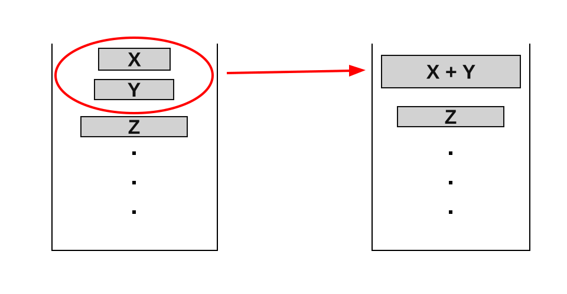

OI Wiki · prijevod · Osnove algoritamaOI Wiki · translation · Algorithm basics
TimsortTimsort
Sadržaj
Ova stranica predstavlja Timsort, hibridni i stabilni algoritam sortiranja.
Uvod
Timsort je 2002. osmislio Tim Peters, jedan od glavnih razvijatelja Pythona, i primijenio ga u jeziku Python. Vješto spaja prednosti insertion sorta i merge sorta te je precizno optimiran za postojeću uređenost u podacima, pa je osobito prikladan za skupove podataka s mnogo djelomično sortiranih podnizova. CPython koristi Timsort od inačice 2.3, a od inačice 3.11 njegovu strategiju redoslijeda spajanja zamjenjuje Powersortom1. Timsort se široko primjenjuje i u drugim programskim okruženjima; npr. u Javi SE 7 koristi se za sortiranje nizova objekata koji nisu primitivnog tipa.
Ova stranica opisuje tradicionalni Timsort, pri čemu kao mjerodavna uzima pravila spajanja iz CPythona 3.6.5 u kojima je ispravljen problem održavanja invarijante stoga2.
Koraci
Osnovna je ideja Timsorta povećati učinkovitost sortiranja prepoznavanjem i iskorištavanjem uređenosti koja već postoji u podacima. Glavni koraci su:
- Prepoznavanje runova: niz koji sortiramo pretražuje se i u njemu se prepoznaju sortirani uzastopni podnizovi (runovi, engl. run);
- Proširivanje runova: ako je duljina prepoznatog runa manja od
MIN_RUN, run se proširuje insertion sortom; - Spajanje runova: Timsort održava poseban stog i posebnom strategijom spajanja spaja runove na stogu u veće sortirane nizove.
Prepoznavanje runova
Najprije Timsort pretražuje niz slijeva nadesno i prepoznaje uzastopne sortirane nizove, koje nazivamo runovima:
- Uzlazni run: ako je sljedeći element veći ili jednak prethodnom, run se nastavlja širiti.
- Silazni run: ako je sljedeći element manji od prethodnog, run se nastavlja širiti, a zatim se obrće u uzlazni.
Proširivanje runova
Da bi sortiranje malih količina podataka bilo učinkovitije, Timsort uvodi najmanju duljinu runa MIN_RUN. Njezina se vrijednost obično računa dinamički prema duljini niza koji sortiramo i najčešće je između \(32\) i \(64\).
- Ako je duljina prepoznatog runa veća ili jednaka
MIN_RUN, nije potrebna dodatna radnja i run se izravno stavlja na stog. - Ako je duljina prepoznatog runa manja od
MIN_RUN, binarnim insertion sortom umeću se sljedeći elementi u run dok duljina runa ne dosegneMIN_RUN, a zatim se run stavlja na stog.
Spajanje runova
U Timsortu se spajanje (merge sort) upravlja i kontrolira pomoću stoga. Na stogu se čuvaju već prepoznati sortirani runovi, a posebna pravila spajanja određuju kako se runovi na stogu spajaju; cilj je pri spajanju održati uravnoteženost i stabilnost nizova.
Pravila spajanja
Timsort je stabilan algoritam sortiranja, tj. jednaki elementi nakon sortiranja zadržavaju izvorni međusobni poredak. Da bi to osigurao, Timsort pri spajanju spaja samo susjedne, uzastopne runove, a nikad izravno nesusjedne. Nesusjedni runovi mogu sadržavati jednake elemente, pa bi njihovo izravno spajanje vrlo vjerojatno poremetilo njihov međusobni poredak.
Istodobno, da bi kontrolirao uravnoteženost spajanja i broj runova koji čekaju na spajanje, Timsort zahtijeva da svaka tri susjedna runa na stogu zadovoljavaju sljedeće invarijante. Označimo tri runa od vrha stoga prema dnu redom X, Y i Z:
- Uvjet 1:
len(Z) > len(Y) + len(X) - Uvjet 2:
len(Y) > len(X)
Kad su na stogu samo dva runa, također se zahtijeva len(Y) > len(X). Nakon svakog stavljanja novog runa na stog, mergeCollapse provjerava najviše četiri runa s vrha stoga; označimo ih od vrha prema dolje X, Y, Z, W. Spajanje se odlučuje sljedećim redom2:
- ako je
len(Z) <= len(Y) + len(X)ililen(W) <= len(Z) + len(Y), Y se spaja s kraćim od X i Z; ako su X i Z jednake duljine, bira se X; - inače, ako je
len(Y) <= len(X), spajaju se Y i X; - inače se ova runda spajanja prekida i nastavlja se prepoznavanje sljedećeg runa.
Provjeravaju se samo uvjeti za koje svi potrebni runovi postoje; nakon svakog spajanja ponovno se određuju X, Y, Z, W i postupak se ponavlja. Slika u nastavku prikazuje promjenu stoga pri spajanju X i Y.

Zašto treba provjeravati četvrti run?
Ako se provjeravaju samo tri runa s vrha stoga, nakon spajanja može se propustiti narušavanje invarijante dublje na stogu. Npr. stavimo li redom runove duljina \(240,160,50,40,60\) (od dna prema vrhu stoga), staro bi pravilo spojilo \(50\) i \(40\) i dobilo \(240,160,90,60\). Vrh stoga tada zadovoljava \(160>90+60\) i \(90>60\), ali dublje vrijedi \(240\le160+90\).
Taj nedostatak poništava jamstvo fiksnog kapaciteta stoga izvedeno iz invarijante na cijelom stogu. CPython je 2015. ispravio uvjete provjere4.
Optimizacija spajanja
Da bi spajanje runova različitih duljina bilo učinkovitije i trošilo manje memorije, Timsort prije spajanja binarnim pretraživanjem precizno određuje raspon elemenata koje treba obraditi i spaja samo dio koji se zaista mora premjestiti. Konkretno:
-
Određivanje točaka umetanja: binarnim pretraživanjem nađe se položaj na koji bi se prvi element drugog runa umetnuo u prvi run, te položaj na koji bi se posljednji element prvog runa umetnuo u drugi run. Time se sužava raspon koji treba spojiti i obrađuju se samo elementi koje treba premjestiti;
-
Privremeni međuspremnik: tradicionalni algoritmi spajanja na mjestu preslabo su učinkoviti i zahtijevaju mnogo premještanja elemenata. Da bi smanjio taj trošak, Timsort koristi privremeni međuspremnik: kraći run kopira u međuspremnik, a zatim elemente postupno kopira iz međuspremnika natrag u izvorni niz.
Npr. pretpostavimo da postoje dva runa, A i B:
- Run A: \([1, 2, 3, 6, 10]\)
- Run B: \([4, 5, 7, 9, 12, 14, 17]\)
Binarnim pretraživanjem utvrđujemo:
- element \(4\) treba umetnuti na četvrto mjesto runa A;
- element \(10\) treba umetnuti na peto mjesto runa B.
Stoga su prva \(3\) elementa runa A i posljednja \(3\) elementa runa B već na ispravnim mjestima i ne treba ih obrađivati. Treba spojiti samo \([6, 10]\) iz runa A i \([4, 5, 7, 9]\) iz runa B; postupak spajanja prikazan je na slici:

Galopirajući način
Da bi spajanje bilo još učinkovitije, Timsort uvodi galopirajući način (galloping mode). U standardnom spajanju algoritam uspoređuje elemente dvaju runova jedan po jedan i manji stavlja u rezultat. No ako jedan run sadrži dugačak niz uzastopnih elemenata manjih od trenutnog elementa drugog runa, usporedba jedan po jedan uzrokuje nepotreban trošak.
Da bi to riješio, Timsort postavlja prag Min_Gallop (zadano \(7\)). Kad broj uzastopnih „pobjeda” elemenata iz jednog runa dosegne Min_Gallop, algoritam prelazi u galopirajući način i brzo pronalazi položaj elementa. Koraci su:
- Eksponencijalno pretraživanje: od trenutnog položaja algoritam pretražuje run koracima eksponencijalno rastuće duljine \((1, 2, 4, 8, \dots)\) dok ne nađe interval u kojem se nalazi traženi element;
- Binarno pretraživanje: kad je interval koji sadrži traženi element određen, algoritam u njemu binarnim pretraživanjem precizno pronalazi položaj elementa.
Na taj način Timsort preskače mnogo nepotrebnih usporedbi, brzo obrađuje uzastopne manje (ili veće) elemente jednog runa i skupno ih premješta u rezultat spajanja.
Galopirajući način ipak nije uvijek učinkovitiji. Pri nekim razdiobama podataka može dovesti do više usporedbi. Zato Timsort primjenjuje dinamičku prilagodbu:
- Prilagodba praga: održava se promjenjivi parametar
Min_Gallop. Kad se galopirajući način pokaže dobrim (tj. uzastopno se više puta biraju elementi iz istog runa),Min_Gallopse smanjuje za \(1\) i tako potiče daljnje galopiranje; kad se pokaže lošim (često prebacivanje između dvaju runova),Min_Gallopse povećava za \(1\) i galopiranje se koristi rjeđe.
Dinamičkim podešavanjem vrijednosti Min_Gallop algoritam prema stvarnim podacima pronalazi ravnotežu između običnog spajanja i galopirajućeg načina. Za djelomično ili visoko sortirane podatke galopirajući način znatno povećava učinkovitost i performanse Timsorta približava \(O(n)\); za nasumične podatke algoritam postupno naginje običnom spajanju, čime jamči vremensku složenost \(O(n \log n)\).
Složenost
Vremenska složenost Timsorta ovisi o uređenosti podataka:
- Najbolji slučaj: \(O(n)\)
- Kad su podaci već sortirani ili gotovo sortirani, duljine prepoznatih runova bliske su \(n\), broj spajanja se smanjuje i složenost teži k \(O(n)\).
- Najgori slučaj: \(O(n \log n)\)
- Ako ima \(r\) runova, na kraju je potrebno \(r-1\) dvosmjernih spajanja; broj spajanja ne može se zapisati kao \(O(\log n)\).
Prepoznavanje runova stoji \(O(n)\), a proširivanje kratkih runova uz ograničen MIN_RUN također ukupno \(O(n)\). Cijena spajanja jednaka je zbroju duljina dvaju runova koji se spajaju, što je isto što i zbroj, po svim elementima, broja spajanja u kojima element sudjeluje. Gornja granica tog zbroja ovisi o konkretnim pravilima spajanja; za pravila spajanja Pythona 3.6.5 analizirana u literaturi3 amortizirana analiza daje \(O(n+n\log r)\), pa je najgori slučaj \(O(n\log n)\).
Što se tiče prostorne složenosti, Timsort treba otprilike \(O(n)\) dodatnog prostora za stog i privremeni međuspremnik, pa je ukupna prostorna složenost \(O(n)\).
Implementacija
Pseudokod
Literatura i bilješke
Contents
This page introduces Timsort, a hybrid, stable sorting algorithm.
Introduction
Timsort was designed in 2002 by Tim Peters, a Python core developer, and used in the Python language. It cleverly combines the advantages of insertion sort and merge sort and is precisely optimized for the order already present in the data, which makes it especially suitable for data sets containing many partially sorted subsequences. CPython has used Timsort since version 2.3, and since version 3.11 its merge-order strategy has been replaced by Powersort1. Timsort is also widely used in other programming environments; for example, in Java SE 7 it is used to sort arrays of non-primitive objects.
This page describes traditional Timsort, taking as reference the merge rules of CPython 3.6.5, in which the problem with maintaining the stack invariant was fixed2.
Steps
The core idea of Timsort is to improve sorting efficiency by recognizing and exploiting the order already present in the data. Its main steps are:
- Identify runs: scan the array to be sorted and identify sorted contiguous subsequences (runs);
- Extend runs: if an identified run is shorter than
MIN_RUN, extend it with insertion sort; - Merge runs: Timsort maintains a special stack and uses a specific merge strategy to merge the runs on the stack into larger sorted sequences.
Identifying runs
First, Timsort scans the array from left to right and identifies contiguous sorted sequences, which are called runs:
- Ascending run: if the next element is greater than or equal to the previous one, keep extending the run.
- Descending run: if the next element is smaller than the previous one, keep extending the run, then reverse the run into ascending order.
Extending runs
To sort small amounts of data more efficiently, Timsort introduces a minimum run length MIN_RUN. Its value is usually computed dynamically from the length of the array to be sorted and is typically between \(32\) and \(64\).
- If the identified run is at least
MIN_RUNlong, no extra work is needed and the run is pushed directly onto the stack. - If the identified run is shorter than
MIN_RUN, binary insertion sort is used to insert the following elements into the run until its length reachesMIN_RUN, and then it is pushed onto the stack.
Merging runs
In Timsort the merging is managed and controlled through a stack. The stack holds the sorted runs identified so far, and specific merge rules control how the runs on the stack are merged, with the goal of keeping the sequences balanced and the sort stable while merging.
Merge rules
Timsort is a stable sorting algorithm, i.e. equal elements keep their original relative order after sorting. To guarantee this, Timsort only merges adjacent, contiguous runs and never directly merges non-adjacent runs. Non-adjacent runs may contain equal elements, and merging them directly would very likely disturb their relative order.
At the same time, to control the balance of the merges and the number of runs waiting to be merged, Timsort requires every three adjacent runs on the stack to satisfy the following invariants. Denote the three runs from the top of the stack toward the bottom by X, Y and Z:
- Condition 1:
len(Z) > len(Y) + len(X) - Condition 2:
len(Y) > len(X)
When there are only two runs on the stack, len(Y) > len(X) is also required. After each new run is pushed, mergeCollapse examines at most four runs at the top of the stack; denote them from the top downward by X, Y, Z, W. Merging is decided in the following order2:
- if
len(Z) <= len(Y) + len(X)orlen(W) <= len(Z) + len(Y), merge Y with the shorter of X and Z; if X and Z have equal length, choose X; - otherwise, if
len(Y) <= len(X), merge Y and X; - otherwise, stop this round of merging and continue identifying the next run.
Only the conditions whose required runs all exist are checked; after each merge, X, Y, Z, W are determined again and the process above is repeated. The figure below illustrates how the stack changes when X and Y are merged.
Why does the fourth run need to be checked?
Checking only the top three runs of the stack may, after a merge, miss a violated invariant deeper in the stack. For example, push runs of lengths \(240,160,50,40,60\) in order (from bottom to top of the stack); the old rule would merge \(50\) and \(40\), giving \(240,160,90,60\). The top of the stack now satisfies \(160>90+60\) and \(90>60\), but deeper down \(240\le160+90\).
This flaw invalidates the fixed stack capacity guarantee derived from the whole-stack invariant. CPython fixed the check conditions in 20154.
Merge optimization
To merge runs of different lengths more efficiently and with less memory overhead, Timsort uses binary search before merging to pinpoint the range of elements that actually needs processing, and only merges the part that has to move. Specifically:
-
Determine the insertion points: use binary search to find the position where the first element of the second run would be inserted into the first run, and the position where the last element of the first run would be inserted into the second run. This narrows the range to be merged so that only the elements that need to move are processed;
-
Temporary buffer: traditional in-place merge algorithms are too inefficient and require many element moves. To reduce this overhead, Timsort uses a temporary buffer: it copies the shorter run into the buffer and then gradually copies elements from the buffer back into the original array.
For example, suppose there are two runs A and B:
- Run A: \([1, 2, 3, 6, 10]\)
- Run B: \([4, 5, 7, 9, 12, 14, 17]\)
Using binary search we determine:
- element \(4\) should be inserted at the fourth position of run A;
- element \(10\) should be inserted at the fifth position of run B.
Therefore the first \(3\) elements of run A and the last \(3\) elements of run B are already in the correct positions and need no processing. Only \([6, 10]\) from run A and \([4, 5, 7, 9]\) from run B need to be merged; the merge process is shown in the figure below:
Galloping mode
To further improve merge efficiency, Timsort introduces galloping mode. In a standard merge, the algorithm compares the elements of the two runs one by one and places the smaller one into the result array. However, if one run contains a long stretch of consecutive elements smaller than the current element of the other run, comparing one by one causes unnecessary overhead.
To solve this, Timsort sets a threshold Min_Gallop (default \(7\)). When the number of consecutive "wins" by elements of one run reaches Min_Gallop, the algorithm enters galloping mode and quickly locates the position of the element. The steps are:
- Exponential search: starting from the current position, the algorithm searches one run with exponentially growing steps \((1, 2, 4, 8, \dots)\) until it finds an interval containing the target element;
- Binary search: once the interval containing the target element is determined, the algorithm uses binary search within that interval to pinpoint the position of the target element.
In this way Timsort skips many unnecessary comparisons, quickly handles the consecutive smaller (or larger) elements of one run and moves them into the merge result in bulk.
Galloping mode is not more efficient in every case, however. For some data distributions it may lead to more comparisons. Therefore Timsort uses a dynamic adjustment strategy:
- Threshold adjustment: a variable
Min_Gallopparameter is maintained. When galloping mode performs well (i.e. elements are repeatedly taken from the same run),Min_Gallopis decreased by \(1\) to encourage further galloping; when galloping mode performs poorly (frequent switching between the two runs),Min_Gallopis increased by \(1\) to reduce how often galloping is used.
By dynamically adjusting the value of Min_Gallop, the algorithm strikes a balance between normal merging and galloping mode based on the actual data. For partially or highly ordered data, galloping mode can significantly improve efficiency and bring the performance of Timsort close to \(O(n)\); for random data, the algorithm gradually leans toward normal merging, which guarantees the \(O(n \log n)\) time complexity.
Complexity
The time complexity of Timsort depends on how ordered the data is:
- Best case: \(O(n)\)
- When the data is already sorted or nearly sorted, the runs identified by the algorithm have length close to \(n\), the number of merges decreases and the complexity approaches \(O(n)\).
- Worst case: \(O(n \log n)\)
- If there are \(r\) runs, \(r-1\) two-way merges are needed in the end; the number of merges cannot be written as \(O(\log n)\).
Identifying runs costs \(O(n)\), and extending short runs with a bounded MIN_RUN also costs \(O(n)\) in total. The merge cost is the sum of the lengths of the two runs merged each time, which equals the sum over all elements of the number of merges each element takes part in. The upper bound on this sum depends on the specific merge rules; for the Python 3.6.5 TimSort merge rules analyzed in the literature3, amortized analysis gives \(O(n+n\log r)\), hence the worst case is \(O(n\log n)\).
As for space complexity, since Timsort needs roughly \(O(n)\) extra space for the stack and the temporary buffer, the total space complexity is \(O(n)\).